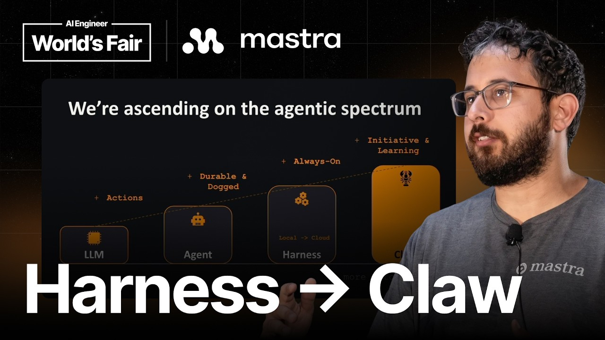

A first-principles analysis of the AI agent evolution
The Central Thesis
"Every harness will expand until it becomes a claw."
Sam Bhagwat — a spinoff of Zawinski's Law ("every program expands until it can send mail")
The talk argues that the developer-tool layer we call a "harness" — the durable, multi-hour coding agent environment — is not a stable endpoint. Economic, technological, and psychological pressures push every harness to absorb initiative and learning until it becomes a "claw": an always-on, channel-connected agent that acts while you sleep.

First Principles
First-principles thinking strips away analogy and asks: what is each layer fundamentally? Build up from irreducible truths, not from what came before.
A stateless text-to-text function. No memory, no tools, no continuity. The raw material — everything else is scaffolding built on top.
Model + loop + tools + memory + retries. It takes actions, holds state, and persists a thread. It runs in minutes, not seconds.
Context Engineering + Coding Agents. Durability and doggedness — it runs for hours or days, plans, fans out subagents, compacts context, resumes dropped threads.
Harness + initiative + learning. It listens to external events, keeps a heartbeat, pings you on Slack, and auto-improves from its own traces.
The defining equation of the talk: Context Engineering + Coding Agents = Harness. Everything above that line is a question of how far the system reaches into your life.
Visual 01 · The Agentic Spectrum
Each tier adds capabilities the previous could not. The spectrum climbs from a single action to a self-improving system.
The agentic spectrum: Actions → Durability → Doggedness → Always-on → Initiative → Learning
Deconstruction
A harness is the product of two forces fused: the context-engineering discipline that curates what the model sees, and coding agents that turn that context into action. Together they produce two emergent qualities that define the tier.
Persists a stream after losing a connection and resumes from the exact point where it stopped. Threads survive crashes. Sessions can be picked up days later.
Runs for hours or days instead of minutes. Plans a multi-step path, fans out parallel subagents, spins up background tasks, and compacts its own context window when it fills up.
The harness capabilities Sam enumerates: planning mode · parallel subagents · skills · background bash tasks · context compaction · thread persistence · queuing · steering · interrupting · session-long tool approval.
Visual 02 · Capability Architecture
Each layer is a superset. Nothing is discarded as you ascend — the claw still does everything the harness, agent, and model do.
Each layer is a strict superset of the one below — nothing is lost on the way up.
Distribution
The harness splits into two deployment shapes — and the cloud shape is what primes the jump to claw. Local harnesses live on your machine; cloud harnesses are always-on, reachable from Slack and mobile, and they create pull requests instead of just writing local code.
Your machine, your terminal
Always-on, multi-tenant
Visual 03 · The Expansion Forces
Three pressure vectors — technological, economic, and psychological — push a harness outward until it crosses the line into claw.
Steinberger's Law: technological, economic, and psychological forces compound — the harness cannot stay small.
The Destination
A claw adds two qualities a harness lacks: initiative and learning. Together they let the system act without being asked and improve without being told.
It listens to external feed services and keeps a heartbeat — waking at defined intervals to act. It sends messages through channels (Slack, WhatsApp, Telegram), runs a daemon, and exposes a gateway for incoming and outgoing requests. Memory lives somewhere more accessible than a local file.
Every run generates traces. The system can auto-improve from them — automatic skill generation is the concrete example — and could even modify the code that drives it. The industry is still exploring the right approach, but the direction is toward a system that gets better by running.
Visual 04 · Capability Matrix
The exact capabilities that separate a harness from a claw, mapped side by side.
The claw doesn't replace harness capabilities — it adds initiative and learning on top of them.
The Forecast
Harnesses will keep getting more powerful, then a shakeout will occur. Categories will emerge, and people will have room in their lives for only a limited number of claws. The analogy is direct: Android and iOS consolidated the 2010s platform layer after an explosion of apps.
Sam's survival test is binary. A product stays relevant if it is either very economically valuable or very frequent. If it is neither, people forget it exists. And even if you reach the top of the hill, another wave of shakeout is expected later in the 2020s.
Visual 05 · Consolidation Trajectory
Explosion of harnesses → a shakeout → a few claws survive. The 2010s platform consolidation maps onto the coming agent era.
Survival test: stay economically valuable OR stay frequent — otherwise you are forgotten.
For Builders
If Steinberger's Law holds, your harness will be pressured to add initiative and learning. Architect for that expansion now — a heartbeat hook, a channel adapter, an accessible memory store — rather than retrofitting them later.
Decide whether your claw will compete on economic value or frequency. A product that is neither gets forgotten in the shakeout. The choice shapes what capabilities you invest in first.
Local harnesses stay developer-facing. The qualities that define a claw — always-on presence, channel reach, multi-user steering — only emerge once the harness moves to the cloud and creates PRs instead of local diffs.
Even reaching the top of the hill is temporary. Sam predicts another shakeout later in the 2020s, so build with the assumption that capability bar will keep rising and users will migrate to more powerful alternatives.